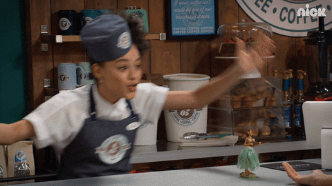
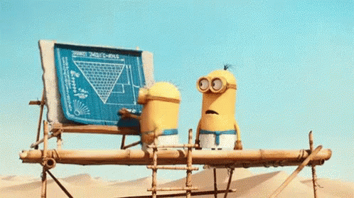
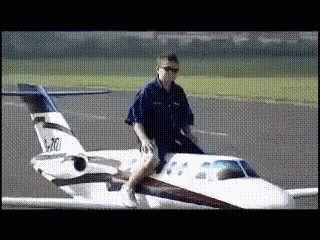
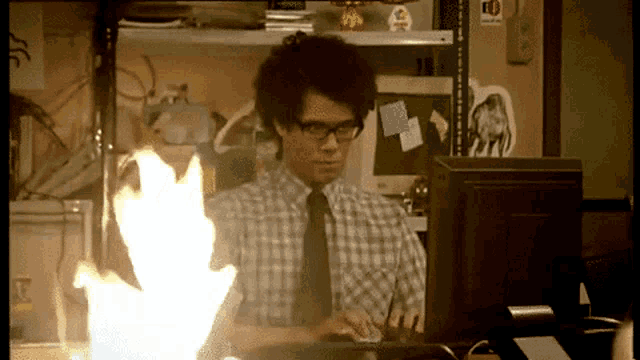

Eda SARIKAYA
Web Developer

Contact Me
Mail: edassarkaya@outlook.com
Phone: +353 83 305 8015
Address: Dublin11, Ireland
Linkedin: https://www.linkedin.com/in/eda-sarikaya/
We should follow our dreams. Success is hidden in this. I am lucky because I have a dream
EDUCATION
Industrial Engineering
Celal Bayar University
09/2016 - 08/2021
High School
Denizli Anatolian High School
09/2011 - 06/2015
WORK EXPERIENCE

Barista
The Rolling Donut
04/2023 - Present
- I have worked as a barista to improve my English and live in Dublin for 8 months
Production Engineer

Tafe International Tractor
11/2021 - 01/2023
- I worked as an manufacturing engineer in the production lines consisting of 5 cellsand 62 people for 14 months
- In addition I did cycle time taking, line balancing and line improvement projects on production lines
Business Analyst Internship
Whirlpool Corporation
03/2021 - 08/2021
- I did intership as a method engineer for 5 months
- We succeeded in line balancing using WCM for 28 station line
- In addition, I supported the solution team by taking cycle time and reporting
Manufacturing Internhip
Altınbaşak Textile
08/2020 - 10/2020

Kitchen Staff
Wolf Ridge Environmental Learning Center
06/2019 - 09/2019
- I have been Minnesota/USA for 3 months
- I lived in forest with a Camp Team
- I worked in the kitchen and took care of children who came to camp
PROJECTS
- Assembly Line Balancing
- Turkey's Regional Residential Energy Need with Renewable Energy Resources
COMPUTER SKILLS

Html
CSS
JavaScript
Visual Studio
SQL
Microsoft Office
SKILLS
- Talkative
- Creativity
- Teamworker
- Cruosity
- Punctual
- Analysis
- Problem Solving
LANGUAGES